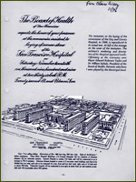
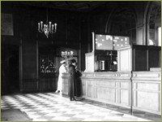

Buildings
BRICKS AND MORTAR: TWO NEW HOSPITALS FOR SAN FRANCISCO
by Nancy Rockafellar
In the years after the 1906 earthquake, San Francisco rebuilt with remarkable speed, but the disaster and epidemics that followed reinforced the need for adequate hospitals. The old City County Hospital on Potrero had been burned down in 1908 after the discovery of plague-infected rats within its walls. Patients were moved to converted horse stalls, and surgery, kitchen, and supply rooms were set up in the grandstand at the Ingleside Jockey Club Race Track. The drafty racetrack buildings were not adequate for acute medical and surgical cases and city officials quickly worked to restore the city's most important public health facility.

Plans for San Francisco County Hospital
The cornerstone for the new 512-bed San Francisco Hospital was laid at 22nd and Potrero in 1909 and the completed buildings were dedicated by Mayor Rolph on May 1, 1915. The series of brick buildings were designed by architect Newton J. Tharp with a plan based upon European pavilion style, designed to maximize ventilation and prevent cross infection. The external walls were decorated with Renaissance terra cotta and elegant arches; each ward building had a roof garden, and the grounds contained tiled fountains and walking paths. During its first year of occupancy, the number of surgical operations at the City County hospital increased by 400 percent and the patient census rose from 341 to 683.
A New Hospital at Parnassus
During the first years of the new century,
Flexner's criticisms and the wishes of University officials led to active movement to build a much finer teaching hospital at the Parnassus site. In his survey Flexner had called the 75-bed ad hoc hospital, created in 1907 in the Medical School Building, "small but modern" and "not up to University standard."
He pointed out that better facilities might attract better full-time faculty. In response, Medical School Dean Herbert C. Moffitt led an effort to fund a new teaching hospital and eventually collected $655,000 to complete the project. An ambitious early first design had been presented in 1903 by Bernard Maybeck, who responded to UC President Wheeler's call for a University Hospital. The final architectural plan that was built, however, was created by San Francisco architect Lewis Parsons Hobart, who also designed Grace Cathedral, the Bohemian Club, and the California Academy of Sciences.

UC Hospital's Elegant Lobby
The cornerstone was laid May 18, 1916, and building was completed within thirteen months. UC Hospital opened in 1917, just as the United States entered the First World War. The six-floor building contained a machine shop and laundry in the basement and the first floor held a grand lobby, a kitchen, a cafeteria, and a lecture amphitheater named for
Hugh Toland. Surgery occupied the second floor. Floors three through five contained laboratories, nursing stations, and wards housing 220 patients.
The creation of these two substantial hospital facilities would provide excellent clinical teaching facilities for UC faculty, medical students, interns, and residents for the next four decades.